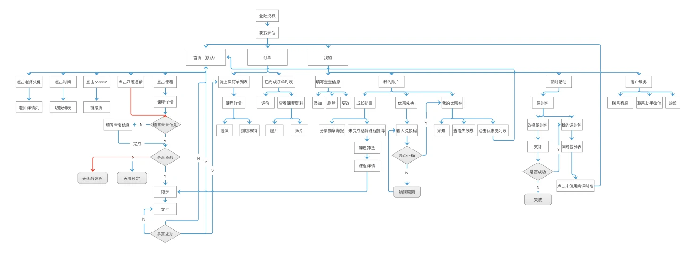

SELECTED CASE / 用户路径
柠檬早教 App 产品流程
以流程图呈现柠檬早教 App 的核心结构与课程服务路径，覆盖登录定位、课程浏览、孩子信息校验、预约支付、订单管理和售后支持。
PRODUCT FLOW / OVERVIEW
从注册登录到课程服务
流程图梳理首页、课程包、订单、我的账户与客服等模块，并展开预约、支付、上课和课程包管理等分支。

以流程图呈现柠檬早教 App 的核心结构与课程服务路径，覆盖登录定位、课程浏览、孩子信息校验、预约支付、订单管理和售后支持。
PRODUCT FLOW / OVERVIEW
流程图梳理首页、课程包、订单、我的账户与客服等模块，并展开预约、支付、上课和课程包管理等分支。
